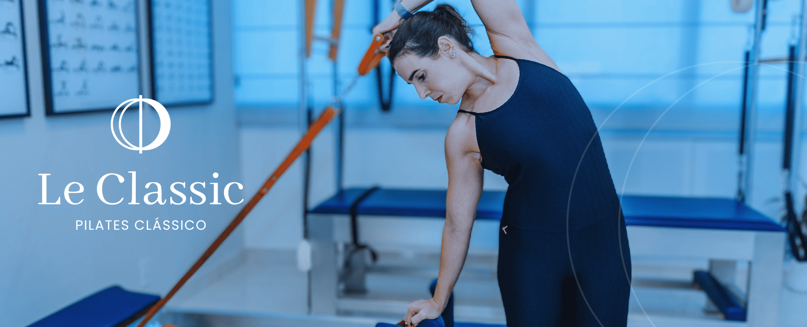

Nossa essência é fazer com que cada aluno se sinta único e especial, oferecendo um atendimento personalizado para atender às suas necessidades específicas.
No Le Classic Pilates, proporcionamos uma experiência de qualidade, promovendo bem-estar e superando expectativas.Valorizamos cada pessoa que entra em nosso estúdio e nos dedicamos a ajudá-las a alcançar seus objetivos de forma segura e eficaz, sempre com base no método Pilates Clássico.
Descubra o poder transformador do Pilates Clássico, inspirado no método tradicional criado por Joseph H. Pilates. Seguimos a técnica e metodologia originais dos exercícios e utilizamos equipamentos que respeitam as especificações do método clássico,promovendo uma prática autêntica e completa.
Praticar Pilates Clássico no Le Classic proporcionará a você: